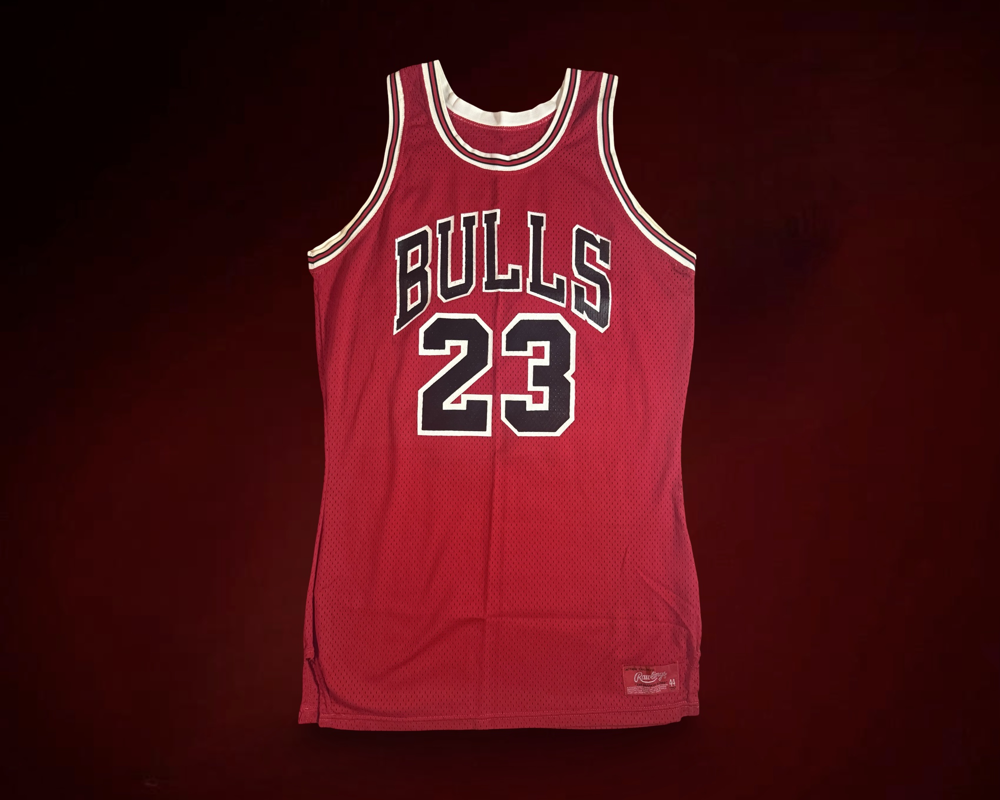
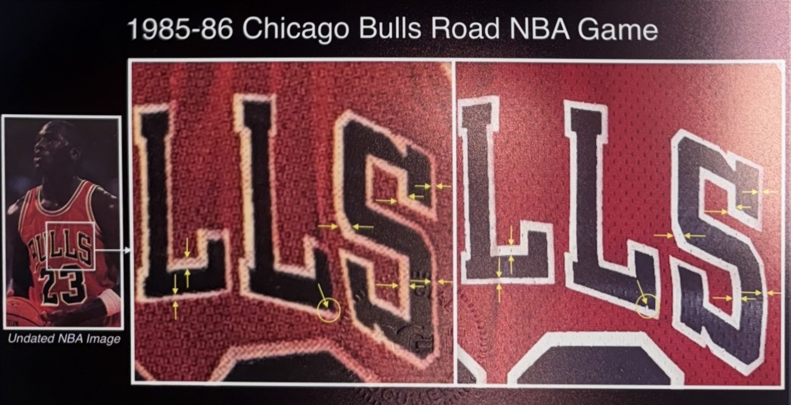
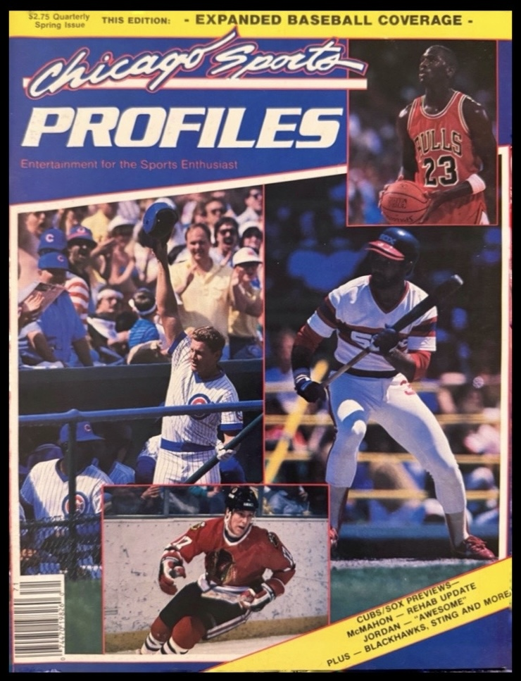
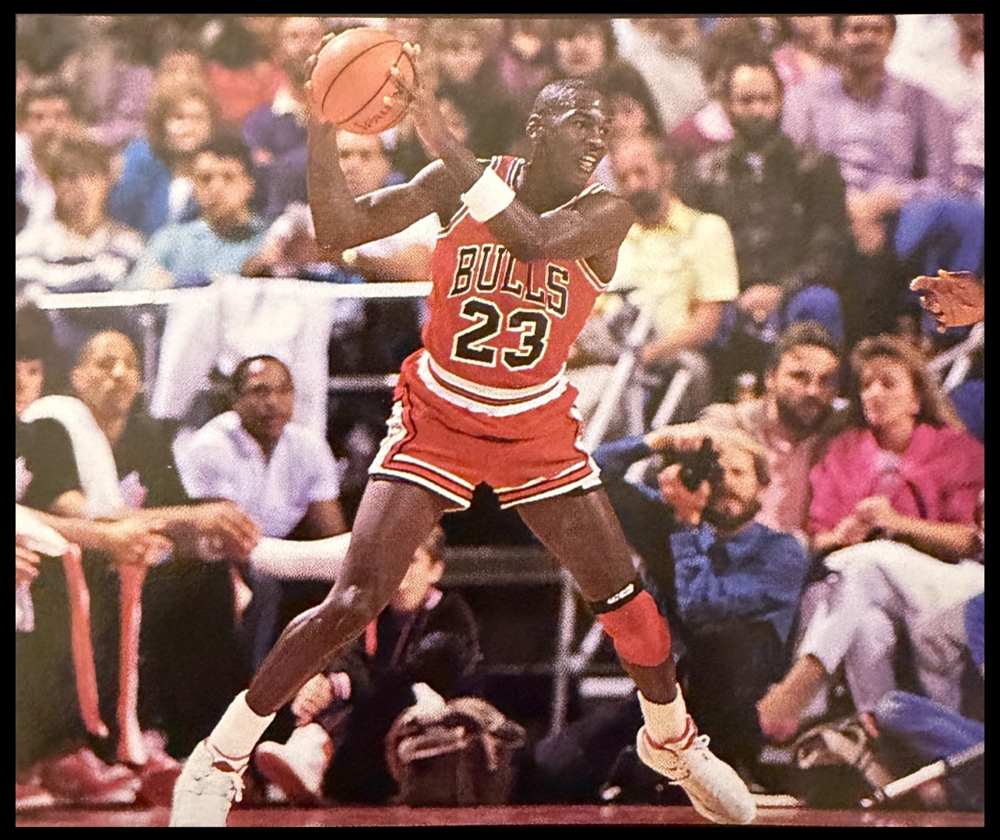
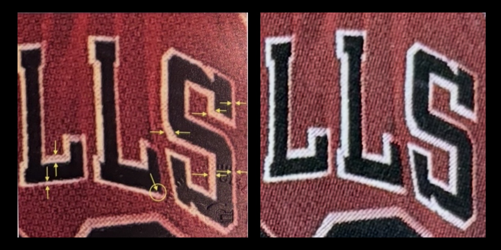
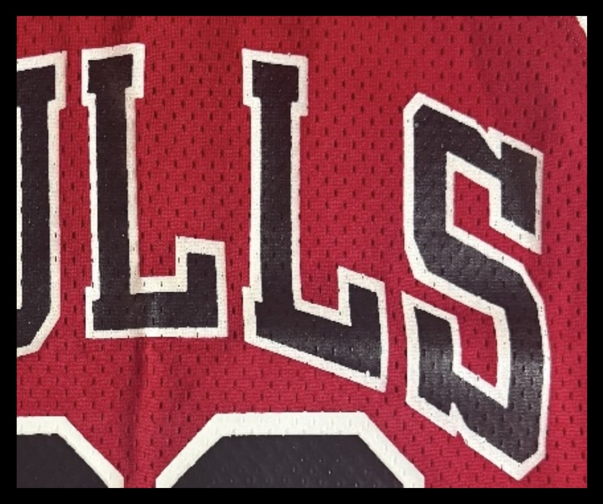

AN EARLY 1985–86 CHICAGO BULLS ROAD JERSEY
Photo matching historical game-worn and player-worn jerseys is often perceived as a matter of identifying visual similarities between a garment and a photograph. In practice, however, the process is far more complex. Reliable identification requires careful evaluation not only of the jersey itself, but also of the photographic sources used as evidence.
This case study examines a Chicago Bulls road jersey attributed to the 1985–86 season that recently surfaced through a private collector. The jersey had previously been matched to a game image, but closer review raised questions regarding both the image quality and the historical context of the reference photograph. Further research ultimately demonstrated that the earlier attribution could not stand and led instead to a separate promotional photograph in which the jersey could be conclusively identified.

THE ILLUSION OF AN EASY MATCH
At first glance, the jersey appeared to correspond with a previously published photo match. The earlier attribution relied on a magazine image believed to show Michael Jordan wearing the jersey during game action. Several visual similarities were cited in support of that conclusion, including a small irregularity along the white border of the “L” in the word BULLS.
Because the artifact itself exhibits a small white irregularity in that same area, the match initially appeared plausible. Yet plausible is not the same as conclusive. The photograph used for the attribution was taken from a printed magazine reproduction, and that immediately raised a more fundamental question: was the feature being used as an identifier actually present in the photograph, or was it being introduced through the reproduction process itself?
This is one of the central risks in early uniform research. When the available evidence is limited, a match can appear convincing simply because the general style is correct and a few visual details seem to align. But unless the source image itself is reliable, the apparent certainty may be misleading.

REEXAMINING THE SOURCE IMAGE
To better understand the photograph used in the earlier attribution, the original magazine containing the image was acquired and examined directly. Once the publication was reviewed in full, a broader context began to emerge.
The Michael Jordan images in the magazine shared the same visual style, similar framing, and the appearance of a unified photographic sequence. Rather than appearing as isolated images from unrelated settings, they presented as part of the same body of work. One additional photograph in the same publication clearly documented Jordan in a preseason setting against Portland, and that provided an important anchor for dating the sequence.
Additional contextual details reinforced that conclusion. In multiple images, Jordan’s white wristband appears scrunched in the same distinctive way, suggesting that the photographs were taken within the same session or game sequence. This mattered because it indicated that the image used in the earlier attribution belonged to the Portland preseason context rather than the game to which the jersey had originally been assigned.
Before any lettering comparison or garment analysis could be trusted, the image itself had to be placed in the correct historical setting. Once that setting changed, the earlier attribution immediately became unstable.

Establishing photographic context is an essential first step in serious photo matching research. A photograph may appear visually useful, but if its date or event is misunderstood, any attribution built upon it becomes unreliable before the garment is ever meaningfully compared.
In this instance, the surrounding images in the magazine proved just as important as the target image itself. They provided the broader context necessary to identify the sequence correctly and to test whether the earlier conclusion could withstand closer review.

TESTING THE PREVIOUS ATTRIBUTION
With the original source in hand, the next step was to test whether the earlier comparison points could withstand closer scrutiny. They did not.
The first issue involved the small “blip” along the white border of the “L” in BULLS. That feature had been treated as a matching characteristic in the earlier attribution. However, once the photograph was viewed and captured more carefully from the printed source, the supposed feature did not appear naturally in the image. What had looked like a meaningful border irregularity was instead the result of reproduction distortion introduced through the printed magazine image.
That finding alone weakened the earlier match substantially, but the more important test came from the mesh itself. In clearer comparison images, mesh holes were visible within the red fabric fields adjacent to the lettering. Those mesh channels did not align with the artifact jersey. Because the mesh weave is fixed relative to the lettering once the jersey is manufactured, such a mismatch is highly significant.
These two findings changed the direction of the investigation. The problem was no longer simply that the earlier match seemed questionable. It was that the image used to support it was both miscontextualized and structurally inconsistent with the artifact.


REOPENING THE SEARCH
Once the Portland image was excluded, the research moved beyond the assumption that the jersey had to resolve to a game photograph. That assumption can be limiting. Early uniform documentation frequently survives not only in game action photography, but also in editorial features, media sessions, and promotional shoots.
Expanding the evidence set in that direction proved critical. Rather than forcing the jersey into the wrong game context, the investigation turned toward finding the photograph that actually documented the garment. That shift in approach ultimately led to a studio promotional image of Jordan wearing a Chicago Bulls road uniform.
Unlike the previously cited magazine image, this photograph was clearly not live game action. It was a posed promotional shot, likely created for editorial or media use early in the season. More importantly, it provided a far stronger basis for comparison because the garment characteristics aligned structurally with the artifact.

ESTABLISHING THE CORRECT PHOTO MATCH
Comparison between the promotional photograph and the jersey revealed multiple independent identifiers. Taken together, these characteristics established the correct match.
The first strong identifier appeared within the red fabric above the numeral “2.” A vertical mesh channel could be traced through the triangular red panel and down the central area between the numerals. The same mesh channel appeared in the identical position on the artifact jersey. Because mesh alignment reflects the underlying weave of the garment rather than lighting or surface reflection, it provided a high-confidence structural point of comparison.
A second identifier appeared in the lower interior corner of the “L” in BULLS. In both the promotional photograph and the artifact, the black twill in this area showed a slight triangular deformation where the vertical and horizontal strokes meet. This type of distortion is often created by stitching tension and can become a stable characteristic of a specific jersey.
A third identifier involved the original border irregularity that first drew attention to the lettering. Along the white border of the “L,” the same small irregularity appeared naturally in the promotional image and aligned with the artifact jersey. Unlike the earlier Portland image, where the feature was distorted by reproduction, this photograph preserved the characteristic in a way consistent with the garment itself.

Each of these identifiers came from a different structural aspect of the jersey: mesh weave, sewn lettering behavior, and border shape. When multiple independent characteristics align in this way, the conclusion becomes far stronger than a match built on a single feature.
This distinction matters. In early player-worn material, apparent visual similarities are common. What gives a match weight is not merely resemblance, but the ability to identify multiple stable characteristics that correspond across both the garment and the photograph.


WHY RESEARCH STANDARDS MATTER
This case illustrates why photo matching requires more than visual similarity. A photograph must first be understood in its proper historical context before it can function as evidence. If the context is wrong, any attribution built upon it becomes unreliable regardless of how plausible the comparison may initially appear.
It also demonstrates the value of using multiple independent identifiers. Surface impressions, low-resolution reproductions, and apparent similarities can be persuasive, but they are not enough on their own. Structural details such as mesh alignment, lettering deformation, and stable border irregularities provide a stronger basis for evaluation because they relate directly to how the jersey was constructed and worn.
In this case, the earlier attribution failed because the source image was misidentified and the cited comparison points did not withstand closer examination. The correct result only emerged after the photograph was dated properly, the prior assumptions were tested, and the investigation expanded to include promotional photography.
That process is the larger lesson. When the evidence is limited, the research standard must become more rigorous, not less. Careful contextual work, patient comparison, and multiple points of structural verification remain essential to documenting game-worn and player-worn artifacts accurately.
In the end, the most important result was not simply correcting an attribution, but clarifying the photographic record and demonstrating the level of care required to do this work responsibly.